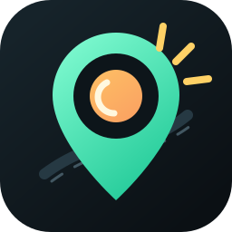

ESP32 Flasher
Sensor firmware with automatic chip-family detection and BLE-first startup.
ESP32 / ESP32-WROOM / ESP32-WROVER, ESP32-S3, and ESP32-C3. The installer detects the connected chip and flashes the matching RoadLens build.
Firmware 0.1.12 scans channels 1-11 after BLE setup, auto-starts if Android drops the first command write, reports raw counters, and stores app-synced public signature feeds for later detection updates.
The Android app Setup tab detects USB-OTG ESP32 boards and can flash the bundled firmware natively from inside the APK.
After this one-time USB/web flash, the Android app can detect outdated sensor firmware and update the ESP32 over Wi-Fi with SHA256 verification.
The APK caches the latest public feed, uses it for BLE sweeps, and syncs Wi-Fi prefixes to v0.1.8+ sensors.
ESP32-S2 has no Bluetooth. ESP32-C6/H2/P4 style boards are not published by this Arduino firmware package yet. Use one of the supported chips above for the BLE phone link.
Firmware source: firmware/<chip>/firmware.bin. Build refresh:
.\scripts\build-firmware.ps1.